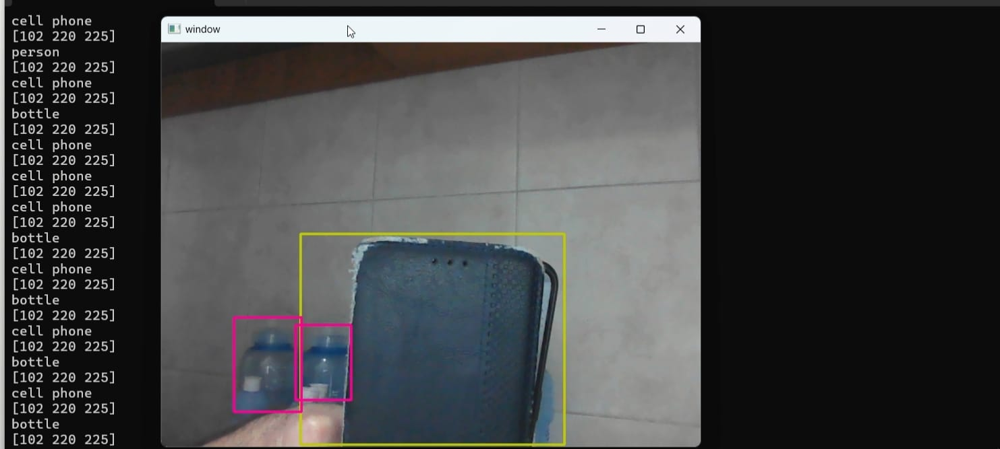
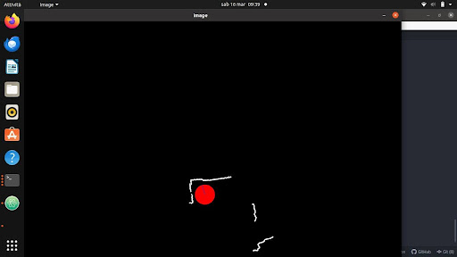

Il nostro robot è progettato per esplorare e navigare autonomamente in un ambiente
tridimensionale utilizzando un giroscopio, un encoder e una fotocamera 3D.
Il programma elabora i dati provenienti da questi sensori per creare una mappa dell'ambiente,
individuando pareti, ostacoli e punti di interesse. Utilizza l'algoritmo di Dijkstra per
pianificare percorsi ottimali attraverso la mappa. Inoltre, il robot può riconoscere oggetti
utilizzando l'efficiente algoritmo YOLOv3, che si basa su una rete neurale convoluzionale per
individuare e classificare gli oggetti nell'ambiente. Infine, il robot è in grado di
riconoscere espressioni facciali umane attraverso il deep learning, che impiega una rete
neurale per analizzare le caratteristiche del volto e determinare l'emozione predominante.
Questa tecnologia offre una vasta gamma di applicazioni, dall'ambito accademico alla sicurezza
informatica e oltre.